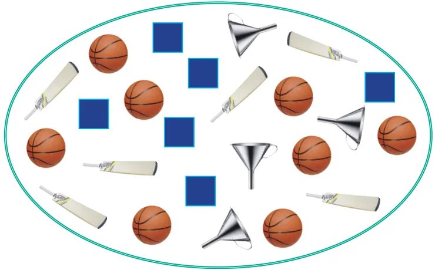
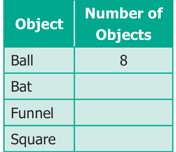

Learning Objectives
- To understand the necessity of collecting data.
- To organise collected data using tally marks.
- To understand the need for scaling in pictographs.
- To draw pictographs and interpret them.
- To draw bar graphs and interpret them.
Recap
Count the objects in the following figure and complete the table that follows:


From the given Figure and the table, answer the following questions.
- The total number of objects in the above picture is __________.
- The difference between the number of squares and the number of bats is __________.
- The ratio of the number of balls to the number of bats is __________.
- What are the objects equal in number?
- How many more balls are there than the number of bats?